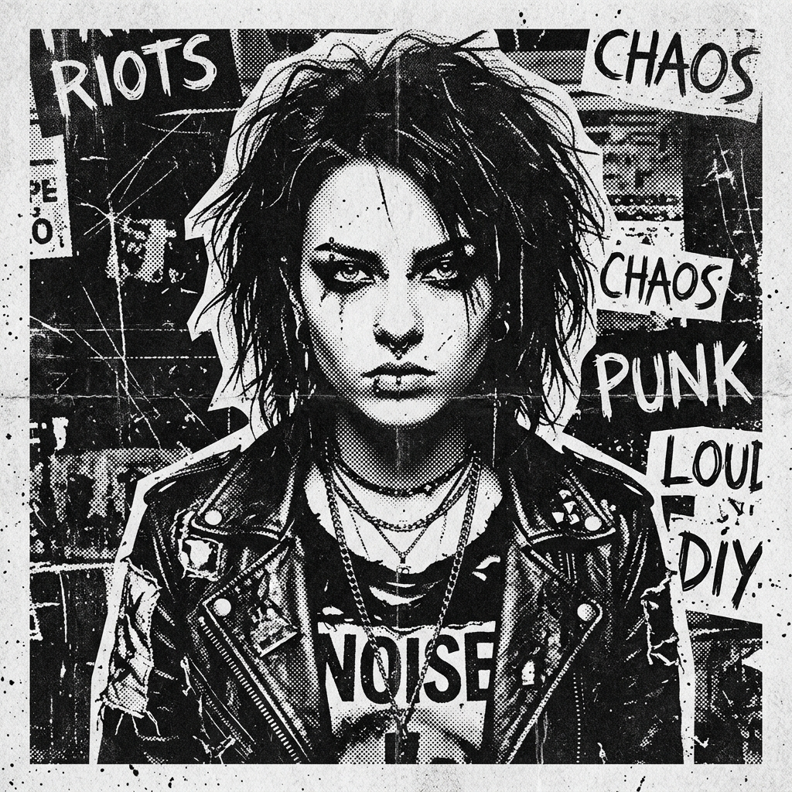

// IMG_REF: 404_TULC
CREATIVE DISRUPTION // BRUTALIST AESTHETIC // VISUAL ANARCHY // BRAND IDENTITY // ZINE CULTURE // EDITORIAL DESIGN // GENERATIVE CODE //
CREATIVE DISRUPTION // BRUTALIST AESTHETIC // VISUAL ANARCHY // BRAND IDENTITY // ZINE CULTURE // EDITORIAL DESIGN // GENERATIVE CODE //
01. TENTANG & BIOGRAFI
BIOGRAPHY_ARCHIVE
MANIFESTO SAYA:
"Kerapian adalah ilusi kenyamanan. Desain terbaik lahir dari ketidaksempurnaan yang disengaja, tekstur yang kasar, dan kejujuran medium. "Di tengah dunia digital yang terlalu steril, saya memilih estetika yang mentah dan bersuara lantang." — TULC
TIMELINE_RECORDS
02. KEAHLIAN & TEKNOLOGI
03. ARSIP KARYA & PROYEK
04. HUBUNGI KREATOR
WARNING: HIGH CONTENT STIMULUS
Mari Berkolaborasi!
Apakah Anda memiliki proyek liar yang butuh visual berani? Label musik yang butuh merchandise mentah? Atau proyek web yang bosan dengan template bersih? Kirimkan pesan sekarang juga.
hello@rakasatria.xyz
@raka.satria
EST. 2026 // RAWFMT